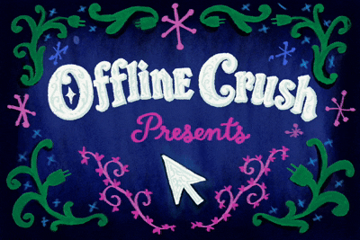
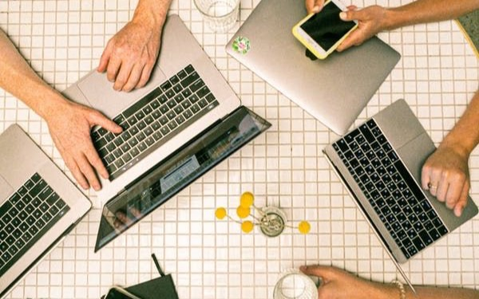
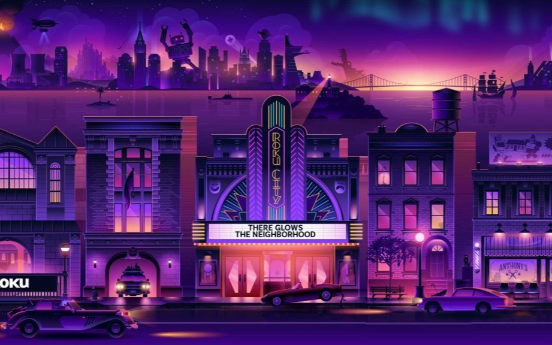
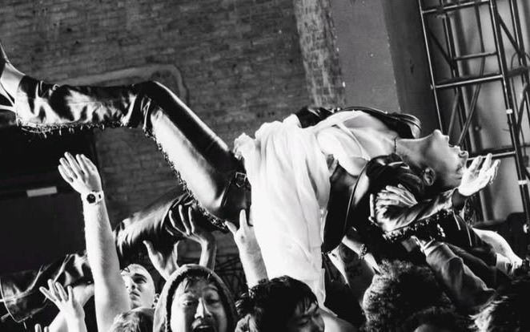
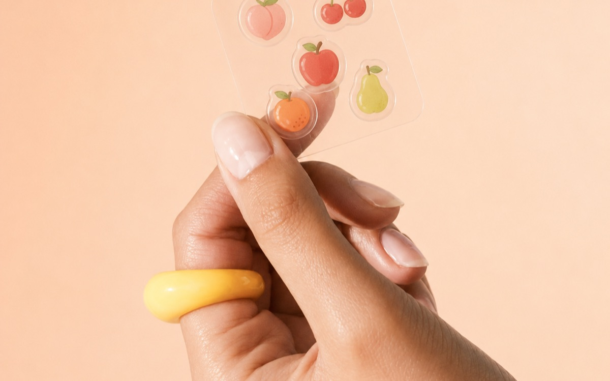
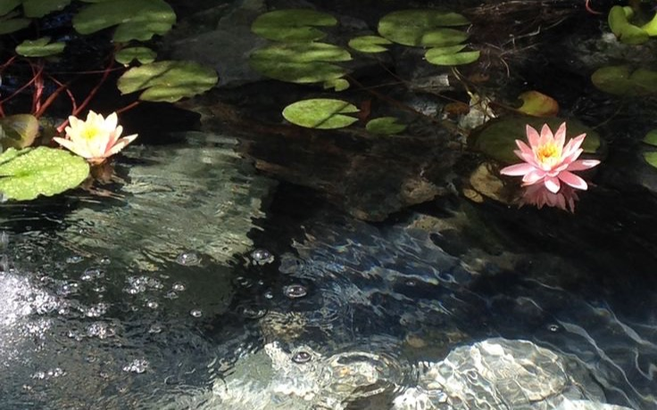

Offline Crush
independent publication · pop culture, music & the internet
selected work
projects, experiments & internet artifacts
independent publication · pop culture, music & the internet

mobile gaming app · AI-generated mini-games · iOS & Android

speculative experiential campaign · concept & art direction

speculative album-era campaign · visual identity & rollout strategy

speculative beauty collaboration · campaign & art direction

playable browser toy · creative coding experiment
No projects in that category yet.